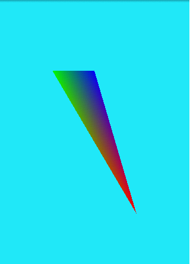
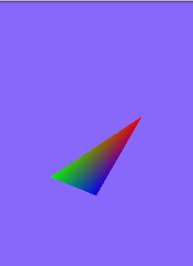

Android 3D OpenGL开发之二 ―旋转的三角形
一、建立三角形的模型
1.1、三角形原理
一般我们建一个三角形需要这么三个数据：
索引数组
顶点坐标数组
顶点对应的颜色数组
三角形就是通过将三个顶点按照索引数组里给出来的顺序画三个顶点画出来的。我们来看看我们这里用的这三个数组：
1.2、Triangle.java 三角形的模型类
import java.nio.ByteBuffer;import java.nio.ByteOrder;
import java.nio.FloatBuffer;
import java.nio.ShortBuffer;
public class Triangle {
// 三角形顶点的Buffer
private FloatBuffer vertexBuffer;
public FloatBuffer getVertexBuffer() {
return vertexBuffer;
}
public void setVertexBuffer(FloatBuffer vertexBuffer) {
this.vertexBuffer = vertexBuffer;
}
// 三角形颜色数组的Buffer
private FloatBuffer colorBuffer;
public FloatBuffer getColorBuffer() {
return colorBuffer;
}
public void setColorBuffer(FloatBuffer colorBuffer) {
this.colorBuffer = colorBuffer;
}
// 三角形索引值得Buffer
private ShortBuffer indexBuffer;
public ShortBuffer getIndexBuffer() {
return indexBuffer;
}
public void setIndexBuffer(ShortBuffer indexBuffer) {
this.indexBuffer = indexBuffer;
}
public Triangle() {
initTriangle();
}
private int numberOfPoint;
public int getNumberOfPoint() {
return numberOfPoint;
}
public void setNumberOfPoint(int numberOfPoint) {
this.numberOfPoint = numberOfPoint;
}
// 初始化三角形
private void initTriangle() {
float[] coords = { -0.5f, -0.5f, 0f,// x1,y1,z1
0.5f, 0.5f, 0f,// x2,y2,z2
0f, 0.5f, 0f // x3,y3,z3
};
float[] colors = { 1f, 0f, 0f, 1f, // point 1
0f, 1f, 0f, 1f, // point 2
0f, 0f, 1f, 1f, // point 3
};
short[] indicesArray = { 0, 2, 1, // rbg
};
numberOfPoint = coords.length / 3;
// float类型有四个字节，分配内存
ByteBuffer vbb = ByteBuffer.allocateDirect(coords.length * 4);
vbb.order(ByteOrder.nativeOrder());
vertexBuffer = vbb.asFloatBuffer();
// short类型有2个字节，分配内存
ByteBuffer ibb = ByteBuffer.allocateDirect(indicesArray.length * 2);
ibb.order(ByteOrder.nativeOrder());
indexBuffer = ibb.asShortBuffer();
ByteBuffer cbb = ByteBuffer.allocateDirect(colors.length * 4);
cbb.order(ByteOrder.nativeOrder());
colorBuffer = cbb.asFloatBuffer();
vertexBuffer.put(coords);
indexBuffer.put(indicesArray);
colorBuffer.put(colors);
vertexBuffer.position(0);
indexBuffer.position(0);
colorBuffer.position(0);
}
}
1.2.1、三角形的顶点坐标数组：
float[] coords = { -0.5f,-0.5f,0f,//x1,y1,z1
0.5f,0.5f,0f,//x2,y2,z2
0f,0.5f,0f //x3,y3,z3
}
数组里是三个顶点的坐标，其中每个顶点的坐标占三位，x/y/z三个轴
1.2.2、三角形的三个顶点的颜色数组：
float[] colors = {1f, 0f, 0f, 1f, // point 1
0f, 1f, 0f, 1f, // point 2
0f, 0f, 1f, 1f, // point 3
};
因为颜色是RGBA，所以每四个元素定义一个颜色值，这其中颜色的顺序和上面顶点坐标的相对应。
1.2.3、三角形成面的索引值
short[] indicesArray = { 0, 2, 1, // rbg
};
对于这个数组里的值其实是坐标数组中的索引，0就代表第一个顶点值也就是-0.5f,-0.5f,0f这个顶点。
二、将三角形加入到我们的View里面去
这个代码是基于第一讲上面的，但是因为有变动所以我就全部贴出来了：
2.1、OpenGLRenderer.java
import javax.microedition.khronos.egl.EGLConfig;import javax.microedition.khronos.opengles.GL10;
import android.opengl.GLSurfaceView;
public class OpenGLRenderer implements GLSurfaceView.Renderer {
private static final String LOG = OpenGLRenderer.class.getSimpleName();
private float red = 0.9f;
private float green = 0.2f;
private float blue = 0.2f;
private Triangle tr;
private float xAngle;
private float yAngle;
@Override
public void onSurfaceCreated(GL10 gl, EGLConfig config) {
tr = new Triangle();
/**
* 设置OpenGL使用vertex数组来画
*/
gl.glEnableClientState(GL10.GL_VERTEX_ARRAY);
/**
* 设置颜色来自数组
*/
gl.glEnableClientState(GL10.GL_COLOR_ARRAY);
}
@Override
public void onSurfaceChanged(GL10 gl, int width, int height) {
gl.glViewport(0, 0, width, height);
}
@Override
public void onDrawFrame(GL10 gl) {
/**
* 我们通过glClearColor()方法为底色定义了颜色。 底色是在我们能看到的所有东西的后面，所以所有在底色后面的东西都是不可见的。
* 可以想象这种东西为浓雾，挡住了所有的东西。
*/
gl.glClearColor(red, green, blue, 1.0f);
// 清除颜色的Buffer然后让现实上面我们通过glClearColor来定义的颜色
/**
* 为了让颜色变化可见，我们必须调用glClear()以及颜色缓冲的Mask来清空buffer， 然后为我们的底色使用新的底色。
*/
gl.glClear(GL10.GL_COLOR_BUFFER_BIT);
/**
* 重置当前的模型观察矩阵 近似于重置。它将所选的矩阵状态恢复成其原始状态
*/
gl.glLoadIdentity();
/**
* 旋转，四个参数分别是旋转度、x轴、y轴、z轴 后面三个值来决定围绕那个轴线来旋转
*/
gl.glRotatef(xAngle, 1f, 0f, 0f);
gl.glRotatef(yAngle, 0f, 1f, 0f);
/**
* 第一个参数是大小，也是顶点的维数。我们使用的是x,y,z三维坐标。 第二个参数，GL_FLOAT定义buffer中使用的数据类型。
* 第三个变量是0，是因为我们的坐标是在数组中紧凑的排列的，没有使用offset。 最后,第四个参数顶点缓冲。
*/
gl.glVertexPointer(3, GL10.GL_FLOAT, 0, tr.getVertexBuffer());
/**
* 参数4表示RGBA(RGBA刚好是四个值），其余的几个参数大家都比较熟悉了。
*/
gl.glColorPointer(4, GL10.GL_FLOAT, 0, tr.getColorBuffer());
/**
* 将所有这些元素画出来。第一个参数定义了什么样的图元将被画出来。 第二个参数定义有多少个元素， 第三个是indices使用的数据类型。
* 最后一个是绘制顶点使用的索引缓冲。
*/
gl.glDrawElements(GL10.GL_TRIANGLES, tr.getNumberOfPoint(),
GL10.GL_UNSIGNED_SHORT, tr.getIndexBuffer());
}
public float getXAngle() {
return xAngle;
}
public float getYAngle() {
return yAngle;
}
public void setYAngle(float angle) {
yAngle = angle;
}
public void setXAngle(float angle) {
xAngle = angle;
}
/**
* 设置颜色的值
* @param r
* Red值
* @param g
* Green值
* @param b
* Blue值
*/
public void setColor(float r, float g, float b) {
red = r;
green = g;
blue = b;
}
/**
* 设置三角形的旋转度
* @param x
* x轴上的旋转度
* @param y
* y轴上的旋转度
*/
public void setAngle(float x, float y) {
xAngle = x;
yAngle = y;
}
}
代码中基本都有注释所以就不单独做解释了。
三、让三角形旋转起来
因为要让三角形旋转起来我们需要在OpenGLView中来监听事件然后来设置旋转度，所以贴出代码也就不做赘叙了。
3.1、OpenGLView.java
import javax.microedition.khronos.egl.EGLConfig;import javax.microedition.khronos.opengles.GL10;
import android.opengl.GLSurfaceView;
public class OpenGLRenderer implements GLSurfaceView.Renderer {
private float red = 0.9f;
private float green = 0.2f;
private float blue = 0.2f;
@Override
public void onSurfaceCreated(GL10 gl, EGLConfig config) {
}
@Override
public void onSurfaceChanged(GL10 gl, int width, int height) {
gl.glViewport(0, 0, width, height);
}
@Override
public void onDrawFrame(GL10 gl) {
/**
* 我们通过glClearColor()方法为底色定义了颜色。 底色是在我们能看到的所有东西的后面，所以所有在底色后面的东西都是不可见的。
* 可以想象这种东西为浓雾，挡住了所有的东西。
*/
gl.glClearColor(red, green, blue, 1.0f);
// 清除颜色的Buffer然后让现实上面我们通过glClearColor来定义的颜色
/**
* 为了让颜色变化可见，我们必须调用glClear()以及颜色缓冲的Mask来清空buffer， 然后为我们的底色使用新的底色。
*/
gl.glClear(GL10.GL_COLOR_BUFFER_BIT);
}
/**
* 设置颜色的值
* @param r
* Red值
* @param g
* Green值
* @param b
* Blue值
*/
public void setColor(float r, float g, float b) {
red = r;
green = g;
blue = b;
}
}
3.2、旋转的关键
你应该已经知道了，这里只是设置了一下旋转的角度，至于关键还是在OpenGLRenderer.java中的俩条语句：
/**
* 旋转，四个参数分别是旋转度、x轴、y轴、z轴
* 后面三个值来决定围绕那个轴线来旋转
*/
gl.glRotatef(xAngle, 1f, 0f, 0f);
gl.glRotatef(yAngle, 0f, 1f, 0f);
就是这两句，也已经给出了注释所以不用多做解释，只是标识出来。
四、效果贴图

